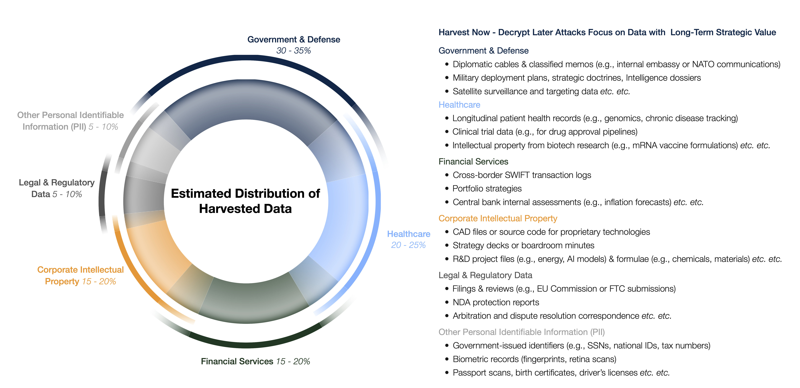
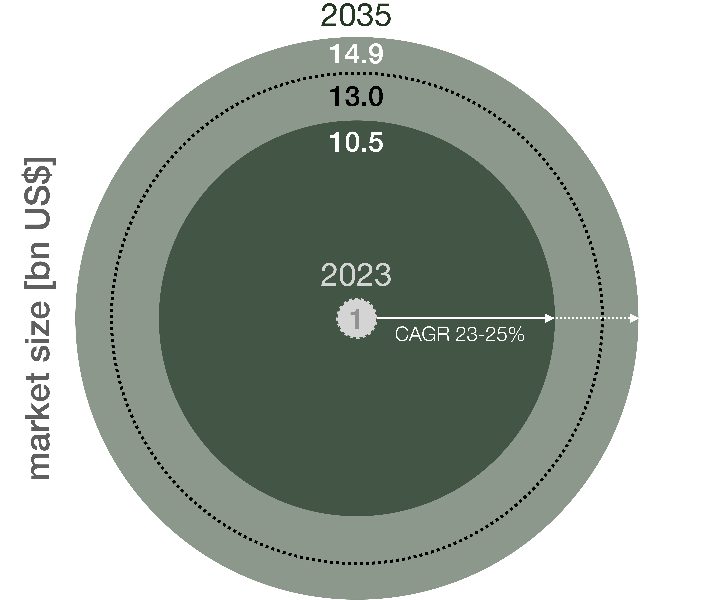

Our lives increasingly take place in a virtual world — humans connect on social media, shop online, and health records are uploaded to an enormous cyber cloud. All this has tremendous upsides and our data is protected via encryption. Yet data breaches are becoming more and more common: encrypted data is stolen and stored by state and non-state players with one goal — decrypt it later. This approach is referred to as harvest now, decrypt later (HNDL).
What are the entities involved in HNDL speculating on? Rapid technological progress. Large language models, for instance, have emerged at a pace that even the most bullish experts didn't anticipate. Meanwhile, quantum computing (QC) breakthroughs are stacking up faster than expected — with test results showing performance gains far beyond the most optimistic projections.
In my view, the ascent of QC will follow a similar path to generative AI: it will appear suddenly and develop at breakneck speed. Operational quantum computers will allow quantum decryption, which will break current encryption standards like a hammer cracks a walnut. All of a sudden, it makes sense to steal encrypted data — because it won't be encrypted for long. QC is closer than we think. That's why we need to confront its consequences right now.
The Illusion of Time: Why 2030 Is Too Late
Until recently, 2030 was considered the earliest possible date for cryptographically relevant quantum computers (CRQC). However, that timeline is rapidly collapsing. In the past year alone:
- Google's Willow chip reduced a 10-septillion-year problem to a 5-minute calculation.
- Microsoft discovered a new quantum phase of matter — a breakthrough for error correction.
- D-Wave and Quantinuum solved previously intractable real-world problems.
Perhaps most significantly, we're seeing the first signs of a quantum–AI feedback loop: artificial intelligence is accelerating quantum computer design and operation, and quantum machines will soon return the favour. These developments strongly suggest that cryptographically relevant QCs will be operational years earlier than even the most optimistic forecasts predicted.
In short, the so-called Q-Day — the day when current encryption will be rendered useless by operational quantum computers — is approaching rapidly. The figure below gives a short timeline of quantum computing, from Feynman's ideation to the near future. The probability of Q-Day hitting this decade is, in my opinion, close to 100%.

A short timeline of Quantum Computing. The probability for Q-Day materialising this decade is — according to my assessment — close to 100%.
The End of Privacy: What Quantum Decryption Means for All of Us
What policymakers and telecom leaders must understand: the "harvest now, decrypt later" threat is no longer theoretical. State intelligence services and corporate espionage actors have already harvested vast troves of encrypted data — just waiting for them to be unlocked by what I call the Quantum Dietrich: a truly universal digital lockpick.
A 2024 briefing from the European Parliamentary Research Service and a 2022 white paper from the World Economic Forum confirm that state and corporate actors are hoarding sensitive communications today, betting on future decryption. HNDL attacks selectively target data with long-term value: health and financial records, government communications, corporate IP, and other personally identifiable information.

HNDL attacks selectively target data with long-term strategic value such as governmental, corporate, and personal data. Estimates are the result of a meta-analysis of data by Rand Corp., The Quantum Insider, the US Government Accountability Office, the US Chamber of Commerce, The Wall Street Journal, Microsoft, and others.
Once CRQCs arrive, decades of encrypted secrets — health records, financial transactions, state communications — will be exposed retroactively. The inflection point of quantum decryption will reverberate through the global economy, national security, and the financial system.
Public Duty: Why the Telecom Industry Must Lead
The telecommunications industry is key to safeguarding our national interests, economic wellbeing, and privacy. Telcos are the pillar of digital infrastructure — they own fibre networks, edge facilities, and data centres. This infrastructure is key to QC operation, yet it is also the Achilles heel: it is the entry point for malign entities preying on data.
Industry leaders have the duty to think ahead and implement safeguards for nation states and their inhabitants — before the state's slow machinery can catch up.
One could argue that it is the state that should implement these safeguards. Yet this time it is different — as the next section explores.
The Governance Lag: Policy is Struggling to Keep Up
Technological innovation has long outpaced democratic decision-making. Not due to unwillingness or inertia, but because democratic processes require consensus-building, consultation, and regulation drafting — all inherently slow. By the time legislation catches up, technology has already evolved.
The United States via NIST's Post-Quantum Encryption Standards and the European Union via its European Quantum Act have taken measures — but there will be a lag between action and implementation. Policymakers must prioritise smart, adaptive policies that automatically adapt to technological developments. Successful examples of such political innovation exist.
In the meantime, the telecommunications industry — masters of digital infrastructure — must step in and take responsibility. The means to upgrade telecommunications are available. In the medium term, the industry will benefit enormously from doing so.
Enormous Opportunity: Another Frontier Era Within Reach
The risk story is clear — but the opportunity story is just as compelling. Quantum computing doesn't just threaten existing systems; it offers telecoms a pathway to growth, differentiation, and relevance in the next technological era.
Telcos stand to benefit in two major ways: first, by commercialising Quantum-Computing-as-a-Service (QCaaS) for industries such as banking, pharmaceuticals, logistics, and cloud computing; second, by using quantum algorithms internally to optimise routing, reduce energy use, and enhance fault prediction.
According to McKinsey, quantum-encrypted communication (QEC) — a safeguard against quantum decryption — will likely be the first QC-related commercial product with an estimated market size of US$13 billion. Figure 3 illustrates the scenarios for the market size of this safeguard by 2035, with a compound annual growth rate (CAGR) of 23–25%.

Scenarios for the market size of quantum-encrypted communication (QEC) for 2035, as developed by McKinsey & Co. (Circles scale with diameter, not area.)
The Time is Now: The Roadmap to Quantum Readiness
There is no silver bullet — but there is a clear path forward. Telecoms can begin by laying the groundwork: auditing quantum risk exposure, launching post-quantum cryptography (PQC) in sensitive sectors, and identifying fibre corridors for quantum key distribution (QKD).
- Phase 1 — Foundation: Audit quantum risk exposure, initiate PQC pilots in sensitive sectors, identify QKD-ready fibre corridors.
- Phase 2 — Pilots: Launch QKD in selected sectors, build sandbox environments for quantum-safe 5G/6G, train internal teams.
- Phase 3 — Scale & Monetise: Offer QCaaS to enterprise clients, integrate quantum optimisation into network operations, establish regional quantum backbone status.
Each step compounds strategic advantage — and shrinks the window of vulnerability.
The Bottom Line: Quantum Decryption Will Emerge — But It Won't Announce Itself
Quantum decryption won't arrive with ceremony. It will arrive quietly — and with seismic consequences. It will shake the foundations of global security, enterprise trust, and data governance.
The telcos that act now will become national assets — perhaps even digital first responders in a new kind of technological emergency. Those that delay risk irrelevance, or worse. Telcos have already mastered electricity and light, harnessing their economic benefits. I believe they can master and monetise the quantum revolution as well — if they act now.
This article is part of an ongoing discussion on emerging quantum risks. A shorter, reader-focused version is available on Medium.